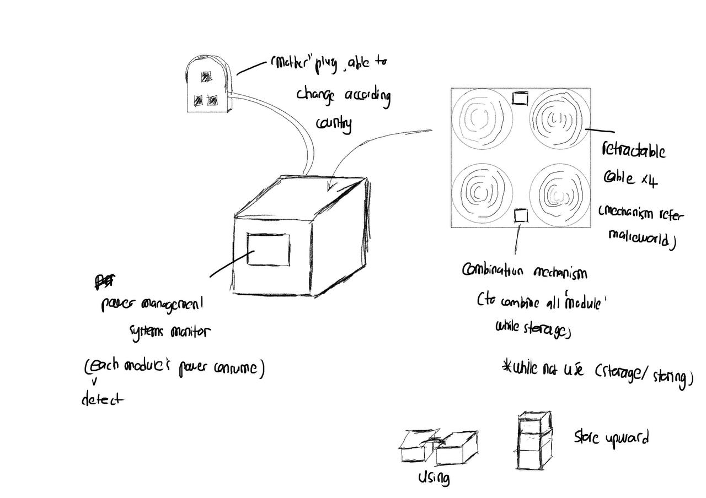
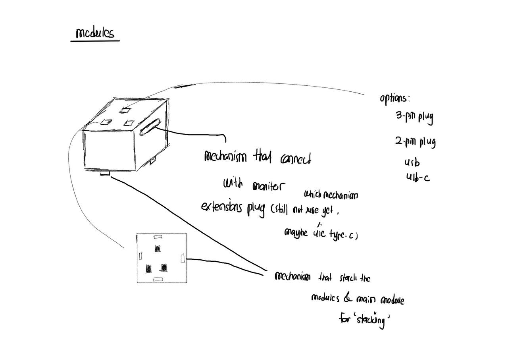

Swappable plug modules
Choose the interface per outlet.
- UK plug
- EU plug
- US plug
- USB‑A
- USB‑C
Modular power extension system
Four retractable USB‑C spools. Swappable plug modules for any country. Per‑module power monitoring. It all stacks into one tidy block when you're done.
Papercraft prototype reel · early concept film
The idea
STAX splits the classic extension board into a base and interchangeable modules. The base plugs into the wall and gives you four independently retractable USB‑C cables. Each cable feeds a module — a UK plug, an EU plug, a US plug, USB‑A, USB‑C, whatever you need — and the base tells you exactly how much power each one is drawing.
One powered base. Swappable plug modules that click on — no fixed sockets, no wasted outlets.
Four spools, each with a single retractable USB‑C cable that pulls out to length and rolls away clean.
An integrated systems monitor detects each module's consumption individually — see what's actually drawing power.
When you're done, modules combine and stack upward into a single tidy block for storage.
How it works
The base unit plugs into any wall socket through its power inlet — the single source for everything downstream.
Draw out one of the four retractable USB‑C cables to exactly the length you need. Each spool is a single, dedicated connection.
Snap on the module that matches your device or country — UK, EU, US plug, USB‑A or USB‑C. Modules carry only the port; the base carries the cable.
Watch each module's live power draw on the base. When you pack up, stack the modules back into one block.
Choose the interface per outlet.
Each retractable cable serves one module at a time — clean routing, no daisy‑chain clutter, no tangle.
The integrated systems monitor measures consumption for every module independently, so power‑hungry devices have nowhere to hide.
A shared connector lets modules combine with the base and stack vertically — a full setup collapses into one storable block.
The design story
Every good product earns its form. Here's how STAX moved from a rough idea to a resolved concept.

Several base‑and‑module forms were explored side by side before the team settled on the version carried through to the final design.

Working through how modules connect and stack — and which interface to standardise on. Plug options were mapped out: 3‑pin, 2‑pin, USB and USB‑C.

A measured blueprint locks in the four labelled spools, single‑connection retractable outputs, the side‑mounted socket port and the wall power inlet.
A stop‑motion papercraft film brings the base into three dimensions — the tactile, buildable form that grounds the whole system.